The MaxFEM Eddy Currents Axisymmetric application numerically solves eddy currents three-dimensional problems with axial symmetry in Cylindrical coordinates. You can find extensive information about the eddy currents mathematical model in the MaxFEM Models user guide.
MaxFEM only considers linear and isotropic materials in this application. Concerning the sources of the problem, the application allows to consider stranded conductors, where the current density is uniformly distributed, and solid conductors, where the current density is computed. In these conductors, the admissible sources are the following:
| Admisible sources | Stranded conductor | Solid conductor |
| Current density | Yes | --- |
| Current intensity | Yes | Yes |
| Potential drop | --- | Yes |
We refer the reader to the mathematical model to see the detailed definition of the voltage drops.
For the numerical approximation of eddy currents problems with axial symmetry, MaxFEM uses Lagrange finite elements of order one to compute the θ-component Aθ of the magnetic vector potential A. Thus the magnetic vector potential field is approximated by piecewise functions in each element of the mesh.
To use the eddy currents application the user needs:
To provide a finite element mesh of the domain: menu Mesh.
To impose the boundary conditions on the boundaries: menu Boundary Conditions.
To assign materials to the different components of the domain: menu Properties. Materials must be previously selected and/or defined in the Materials database.
To assign source properties: menu Volumetric Sources.
To assign the physical parameters: menu Data.
To solve the problem in direct or remote mode: menu Solver/Run or Solver/Run remote, respectively. The user can stop the computation before it is completed in the label Solver/Stop.
Once the problem has been solved, various quantities (menu Outputs) and fields based on the potential can be computed. It is also possible to create displays of the results: menu Visualization.
All the previous steps are described in the items below.
MaxFEM does not include a mesh generator tool so the user must provide its own meshes. In the eddy currents applications, mesh files can be in unv or mfm format (see section MaxFEM mesh files for a complete description of the mesh formats). For eddy currents axisymmetric problems, MaxFEM allows P1 Lagrange triangular finite elements. Mesh may be loaded from the Mesh menu by choosing
Mesh → Open → Choose mesh file → meshfile
In the menu Properties the user can assign a material to the different parts of the computational domain.
First, you must select the number assigned to the domain reference in the mesh (1, for instance)
Properties → Materials → Choose domain references → 1
Then, you select the material (copper, for instance)
Properties → Materials → Choose material → copper
Boundary conditions is a menu entry to define boundary or interface conditions and attach them to boundaries. Eddy currents 2D and axisymmetric applications consider two types of boundary conditions.
In this case, the value (Aθ)D of the magnetic vector potential on boundary ∂ΩD must be given. To do that, you need:
Define the boundary condition (for instance, Dirichlet 1)
Boundary conditions → Dirichlet: magnetic vector potential, Aθ (Wb/m) → Dirichlet 1 → Add
Define the boundary condition via a constant or a precompiled function
Dirichlet conditions: Dirichlet 1
The condition is given by: A constant or a function
Assign the boundary condition to the corresponding boundary reference(s). For instance:
The condition is given by → A constant → Line references → 8 9 10 11
If (Aθ)D takes a constant value, define this value:
The condition is given by: A constant → Constant value → 0
If (Aθ)D is a precompiled function, select "Function defined by user":
The condition is given by: A function → Function name → user
In this case, the user must edit the file funciones.f of the folder $INSTALLDIR/sources/eddy_currents_axi/ of the installing directory and define its own function in the line 57 of the function h, just after the sentences
if(modo.eq.1)then
if(trim(etiqueta).eq.'user') h=0.d0
Then, you must recompilate the solver before running it.
In this case, the value H·τ of the tangential component of the magnetic field on the boundary ∂ΩN must be given. To do that, you need to follow the same steps as for the Dirichlet conditions but selecting
Boundary conditions → Neumann: tangential component of magnetic field H·τ (A/m)
In this case, the user must edit the file funciones.f of the folder $INSTALLDIR/sources/eddy_currents_axi/ of the installing directory and define its own function after line 79, just after the sentences
if(modo.eq.1)then
if(trim(etiqueta).eq.'user') g=0.d0
In the eddy currents axisymmetric application, sources can be defined in stranded conductors or in solid conductors. In the former, the current density is uniformly distributed and the user may specify the current density or the total current intensity, while in the latter the distribution of the current is computed by the model.
To impose each of them, you must perform the following steps depending on the type of source.
Choose the type of source in the Volumetric Sources item of the application.
Volumetric sources → Stranded conductor → Current density, Jθ
Then, define a current density and press the button Add of the dialog box.
Connected components: source _1 → Add
Define the current density via a constant or a precompiled function. For instance
Connected components: source _1
The condition is given by: A constant or a function
Assign the current density to the corresponding domain reference(s). For instance:
The condition is given by → A constant → Domain references → 3
If Jθ takes a constant value, define this value:
The condition is given by: A constant → RMS value (A/m2) → 300
The condition is given by: A constant → Phase angle (Degrees) → 0
If Jθ is a precompiled function, select "Function defined by user":
The condition is given by: A function → Function name → user
In this case, the user must edit the file funciones.f of the folder $INSTALLDIR/sources/eddy_currents_axi/ of the installing directory and define its own function in the line 23, just after the sentences
if(modo.eq.1)then
if(trim(etiqueta).eq.'user')
if(itipo.eq.1) then
Then, you must recompilate the solver before running it.
Choose the type of source in the Volumetric Sources item of the application.
Volumetric sources → Stranded/Solid conductor → Current intensity, I (A)
Then, define a new current intensity and press the button Add of the dialog box.
Connected components: source _1 → Add
Assign the current intensity to the corresponding domain reference(s). For instance:
Domain references → 3
Then, define the values for the intensity and phase angle:
RMS value (A) → 1000
Phase angle (Degrees) → 0
Choose the type of source in the Volumetric Sources item of the application.
Volumetric sources → Solid conductor → Potential drop, ΔV (V)
Then, define a potential drop and press the button Add of the dialog box.
Connected components: source _1 → Add
Assign the potential drop to the corresponding domain reference(s). For instance:
Domain references → 3
Define the constant value for the potential drop and the phase angle:
RMS value (V) → 1000
Phase angle (Degrees) → 0
The user has to choose a frequency for the resolution. By clicking on
Data → Frequency (Hz)
a dialog box appears, in which the user must specify the current frequency.
From the resolution of the eddy currents problem, appropriate derived quantities can be computed. The post-processing quantities available in the MaxFEM eddy currents applications are summarized in the table below.
| Symbol | Magnitude | Type | Unit |
| Aθ | θ-component of the magnetic vector potential | S | Wb/m |
| Jθ | θ-component of the current density | S | A/m2 |
| B | Magnetic flux density | V | T |
| H | Magnetic field | V | A/m |
| Pd | Active power density | S | W/m3 |
| J⨯B | Lorentz force density | V | N/m3 |
Eddy currents application postprocessing quantities
S: Scalar quantity, V: vectorial quantity
As in the eddy currents application the post-processed vectorial quantities are complex (except for the Lorentz force), the user is only allowed to plot the vector fields of real parts, imaginary parts or complex modulus. Furthermore, for each one of these vectorial fields, it is possible to visualize the scalar fields corresponding to the x, y and z components, as well as its euclidean norm.
For instance, by choosing
Visualization → Magnetic flux density B → Real part → Vector components → Modulus
the application plots the scalar field
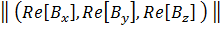
By choosing
Visualization → Magnetic flux density B → Vector modulus → Vectors
the application plots the vector field
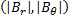
Similarly, the scalar fields corresponding to the θ-components of the magnetic vector potential and current density are complex, so the user is only allowed to plot their real part, imaginary part or modulus in the same graphical visualization. For the current density, the modulus graphical representation corresponds to its RMS value.
Note that the Lorentz Force and the power density are real because they are averaged in a cycle (see mathematical models).
The menu Outputs allows to compute the values of the current intensities and active power in each subdomain of the mesh. Moreover, this menu shows, in each solid conductor, the values of the RMS current intensity and the RMS voltage drop; one of them has been provided by the user, while the other is a postprocessing quantity.
By choosing Outputs → Current intensity, I (A) and selecting a subdomain number (for instance, Choose domain references: → 9) a dialog box appears showing the RMS value, phase, real and imaginary part of the current intensity traversing the selected subdomain.
Similarly, choosing Outputs → Active power, P (W/m) and selecting a subdomain number (for instance, Choose domain references: → 1) a dialog box appears showing the value of the active power in the selected domain.
Finally, by clicking on Outputs → Solid conductor and choosing a conductor, a dialog box appears showing the values of the current intensity and potential drop. For instance
Choose solid connected component: → Source 1
MaxFEM provides a set tools for post-processing and visualization the quantities specified in the Post-Processing Quantities Available section, which are available through the item Visualization of the menu bar. The options and their characteristics are summarized in the table below.
| Item | Visualization options | Description |
Mesh |
Triangulation | Represents the mesh of the domain |
| Domain references | Displays subdomains reference number | |
| Line references | Displays lines reference number | |
| Point references | Displays points reference number | |
| Element numbering | Displays elements reference number | |
| Vertex numbering | Displays the number of a vertex previously chosen with the mouse. | |
| Materials | Displays the name of the material assigned to a subdomain | |
Scalar field |
Subdomains to plot | Allows to choose the domain where results will be displayed |
| Filled | Displays the field distribution on the domain | |
| Threshold | Extracts the cells that fall between a given lower and upper thresholds of the field. | |
| Isolines | Displays the curves along which the field has a constant value. A set of scalar values can be specified to extract more than one isoline at a time. | |
| 3D plot | Displays a three-dimensional plot of the field over the domain. | |
| Plot over line | Cuts a 3D data object with a plane. An interactive widget can be used for placing the plane in the appropriated place. | |
Vectorial field |
Subdomains to plot | Allows to choose the domain where results will be displayed |
| Vectors | Displays the vector field | |
| Vectors components | Displays each of the components of the vector field | |
| Close all | --- | Closes all the windows containing the visualization results |
The user can modify the size of the arrows by using the parameter Scale in the dialog box, for instance at 0.07
Visualization → Magnetic flux density B → Vector modulus → Vectors → Choose options for arrows → Scale → Select the scale for arrows → 0.07
It is also possible to modify the number of vectors in the plot by using the parameter Density in the dialog box, for instance at 50%:
Visualization → Magnetic flux density B → Vector modulus → Vectors → Choose options for arrows → Density → Select the density for arrows (%) → 50
| Scale: 0.07 Density: 50% | Scale: 0.07 Density: 100% |
| 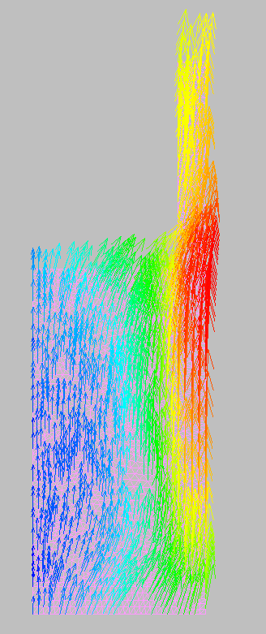 | 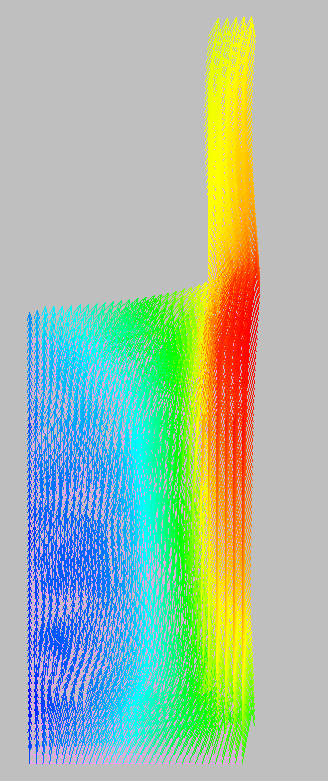 |
| Scale: 0.03 Density: 50% | Scale: 0.03 Density: 100% |
| 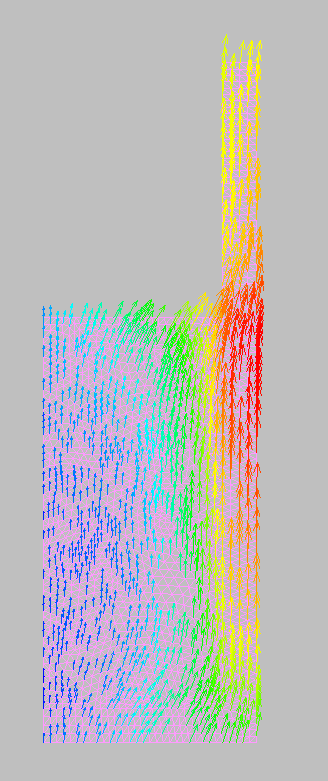 | 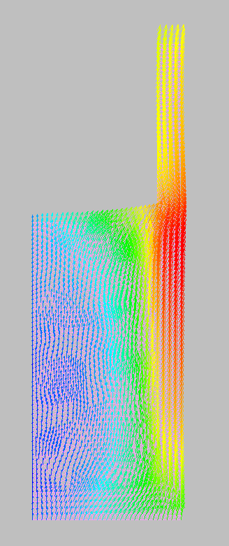 |
The goal of this section is to familiarize the user with the MaxFEM eddy currents axisymmetric application by means of a simple example. This example contains the general steps and all the data needed to describe the physics and to solve the given cases.
To reproduce exactly the example, keep all the options in the different menus at the default settings. It is important to note that in the cases where the analytical solution is provided, this solution corresponding with the default settings; the one corresponding with other options the user may have changed is not necessarily the same.
Remember that before start to work with a particular application, the user must choose a working directory. This directory will be used to store the files associated with the application. In particular, when a sample data is selected, the interface will automatically make a copy of the files associated with that sample in the working directory.
For the eddy currents axisymmetric application, the following examples are available:
Bermúdez, A.; Gómez, D.; Muñiz, M. C.; Salgado, P., Vázquez, R. Numerical modelling of industrial induction, Advances in Induction and Microwave Heating of Mineral and Organic Materials, S. Grundas, ed., Intech, 2011.
Statement of the problem
Induction heating is one of the main applications of eddy currents in metallurgical industry for processes involving heat treatment. An induction heating setup consists of one or several inductors (coils) surrounding a workpiece which is a crucible containing the material to melt, as illustrated in figure below.
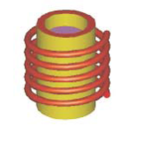
A low frequency alternating current passes through the inductor producing a rapidly oscillating magnetic field which generates eddy currents in the workpiece. Then it is heated due to the active power increasing the temperature of the system and melting the material inside the crucible. In this example we will not deal the thermal problem but only with the electromagnetic one.
In this example will consider an induction furnace consisting on a helical copper coil, a crucible of graphite and silicon as the metal inside. The electromagnetic properties of these materials have been defined in the material database.
In order to state the problem in an axisymmetric setting, the helical coil is replaced by 4 rings (4 being the total number of windings of the coil). Thus, the computational domain reduces to a radial section of the furnace, which must be enclosed with an artificial boundary in order to solve the problem by using a finite element method. This artificial boundary is supposed to be far enough as to assume a homogeneous Dirichlet boundary condition there.
The goal is to compute the distribution of the current density and active power in the conductors (coil and workpiece) as well as the active power and the Lorenzt force in the crucible.
The geometrical data are summarized in the table below.
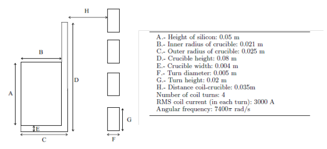
For more details about both numerical and mathematical aspects of this problem we refer the reader to the references above.
Resolution procedure
Once MaxFEM is open, the user must select the application Eddy Currents Axisymmetric from the Project of the menu bar.
Project → Applications → Eddy Currents Axisymmetric
Remember that before start to work with a particular application, the user must choose a working directory.
Then, from the item Project of the Menu bar, select
Project → Sample Data → Example 1: Induction cylindrical furnace
The computational domain is the radial section of an induction furnace. The user must upload the mesh malla_horno4.mfm from the Mesh item of the menu bar.
Mesh → Open → Choose mesh file → malla_horno4.mfm
The user can display the mesh of the computational domain by choosing the option Visualization → Mesh of the Menu bar. If not, the computational domain will be displayed when selecting any item from the menu bar.
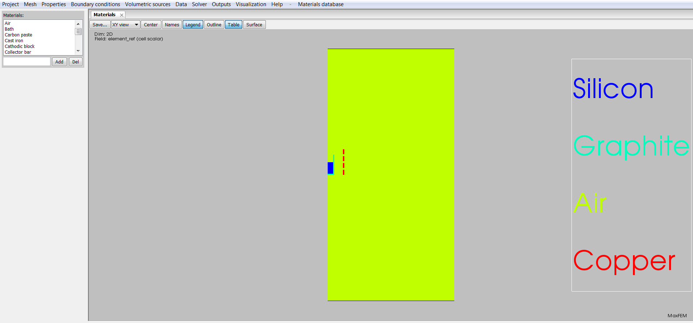
Figure 1: Computational domain and material distribution.
After we have the mesh, we start to go through the menu bar from the left to right and we choose the different options related to the whole simulation.
The materials considered in this example are Silicon, Graphite, Air and Copper, and their properties have been previously defined in the materials database of the interface. To assign these materials to the computational domain, the user must:
Select the item Properties → Materials of the Menu bar.
In the Choose domain references dialog box, select the reference 1.
The dialog box Choose material appears; by default, the material named Silicon associated to the reference 1 is displayed.
In the Choose domain references dialog box, select the reference 2.
The dialog box Choose material appears; by default, the material named Graphite associated to the reference 2 is displayed.
In the Choose domain references dialog box, select the reference 4.
The dialog box Choose material appears; by default, the material named Air associated to the reference 4 is displayed.
In the Choose domain references dialog box, select the reference 6.
The dialog box Choose material appears; by default, the material named Copper associated to the reference 6 is displayed.
In the Choose domain references dialog box, select the reference 7.
The dialog box Choose material appears; by default, the material named Copper associated to the reference 7 is displayed.
In the Choose domain references dialog box, select the reference 8.
The dialog box Choose material appears; by default, the material named Copper associated to the reference 8 is displayed.
In the Choose domain references dialog box, select the reference 9.
The dialog box Choose material appears; by default, the material named Copper associated to the reference 9 is displayed.
The user can display the different properties of this material in Materials database item of the menu bar. To do that,
Select the option Materials database → Open
A dialog box appears where the different materials are displayed. Select, for instance, Graphite.
A new dialog box appears where the different electromagnetic magnitudes are displayed. Click on the property of your interest, for instance, Electrical conductivity.
Choose A constant in the box below and then Isotropic in the Behavior box.
In the Value dialog box the constant value 240000 appears.
Now we are going to impose the boundary conditions. A Dirichlet boundary condition is considered; thus, the default value 0 corresponds to the θ-component of the magnetic vector potential in the boundary of the domain. To impose this boundary condition the user must:
Select the option Boundary conditions → Dirichlet: magnetic vector potential in the menu bar.
Click on Dirichlet 1 on the Magnetic vector potential dialog box.
In the dialog box The condition is given by, select the option A constant
Click on Line reference. By default, numbers 8, 9, 10, 11 associated to this reference are displayed in the box below. Click on 8 to display the reference in the visualization window.
Click on Constant value. By default, in the dialog box Constant value below the value 0 appears.
Click on the item Volumetric Sources of the Menu bar to continue with the resolution procedure.
To define the source of the problem, select the option Volumetric Sources → Solid conductor → Current intensity, I (A) in the menu bar. A dialog box appears where the user can select/define the source options. In this example, the default options Source 1, Source 2, Source 3 and Source 4 are displayed. So now we need to specify the domain references and the value and phase angle of each source. To do that, the user must:
Click on Source 1. A dialog box is displayed below.
Click on Domain references and to display the number of the reference where the source is considered. In this source, the reference 6 is considered.
Click on RMS Value to display/define the value of the intensity. In this source, the default value is 3000 (in A).
Click on Phase angle to display/define the phase angle of the intensity. In this source, the default value is 0 (in degrees).
Click on Source 2. A dialog box is displayed below.
Click on Domain references and to display the number of the reference where the source is considered. In this source, the reference 7 is considered.
Click on RMS Value to display/define the value of the intensity. In this source, the default value is 3000 (in A).
Click on Phase angle to display/define the phase angle of the intensity. In this source, the default value is 0 (in degrees).
Click on Source 3. A dialog box is displayed below.
Click on Domain references and to display the number of the reference where the source is considered. In this source, the reference 8 is considered.
Click on RMS Value to display/define the value of the intensity. In this source, the default value is 3000 (in A).
Click on Phase angle to display/define the phase angle of the intensity. In this source, the default value is 0 (in degrees).
Click on Source 4. A dialog box is displayed below.
Click on Domain references and to display the number of the reference where the source is considered. In this source, the reference 9 is considered.
Click on RMS Value to display/define the value of the intensity. In this source, the default value is 3000 (in A).
Click on Phase angle to display/define the phase angle of the intensity. In this source, the default value is 0 (in degrees).
Now, select the option Volumetric Sources → Solid conductor → Potential drop, ΔV (V) in the menu bar. A dialog box appears where the user can select/define the source options. In this example, the default option Source 5 is displayed. So now we need to specify the domain references and the value and phase angle of the source. To do that, the user must:
Click on Domain references and to display the number of the references where the source is considered. In this example, the references 1, 2 are considered.
Click on RMS Value to display/define the value of the potential drop. In this example, the default value is 0 (in V).
Click on Phase angle to display/define the phase angle of the intensity. In this example, the default value is 0 (in degrees).
The item Data of the menu bar allows to introduce different data depending on the application. In eddy currents, the option allows to introduce the current frequency. In this example, the value of the frequency is 3700 Hz. To define it, the user must
Select Data → Frequency in the menu bar.
The dialog box Frequency (Hz) appears. By default, the value 3700 is displayed.
Select the item Run (or run remote depending on your preference) of the menu bar to proceed with the resolution of the problem.
Select the item Visualization of the menu bar to display the results.
Click on the option Current density to display current density. A dialog box appears where the user can choose the field representation.
Choose the options Subdomains to plot → 1, 2 and RMS Value → Filled to display the modulus of the current density in the workpiece.
Visualization → Current density → Subdomains to plot → 1, 2
Visualization → Current density → RMS Value → Filled
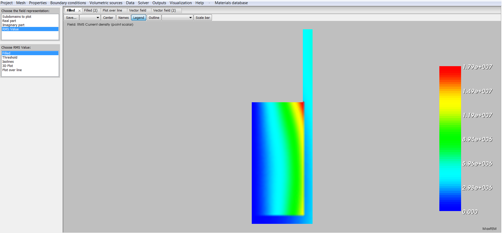
Figure 2: Modulus of the current density in the workpiece (metal + crucible).
Choose the options Subdomains to plot → 1, 2, 6, 7, 8, 9 and RMS Value → Filled to display the modulus of the current density in all conductors (workpiece and coils).
Visualization → Current density → Subdomains to plot → 1, 2, 6, 7, 8, 9
Visualization → Current density → RMS Value → Filled
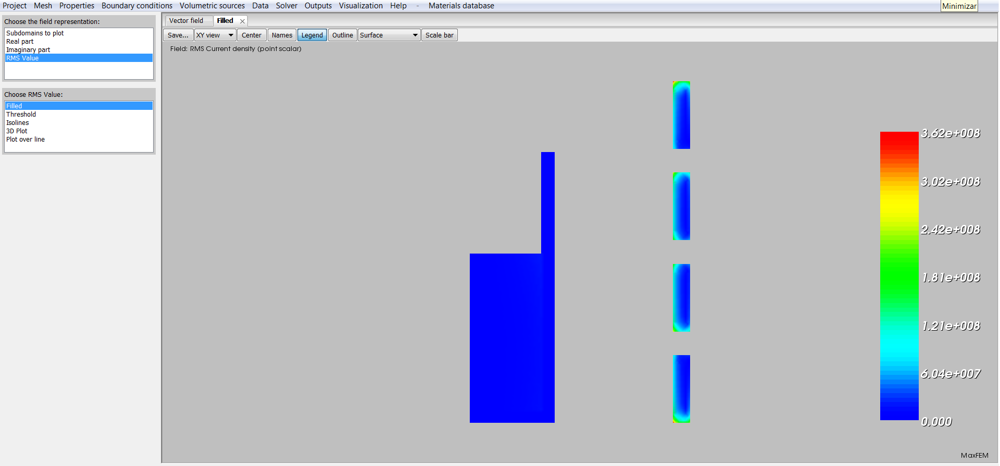
Figure 3: Modulus of the current density in all conductors.
To display the active power, choose the option Visualization → Active power density of the menu bar.
Select the option Subdomains to plot → 1, 2 and then Plot over line
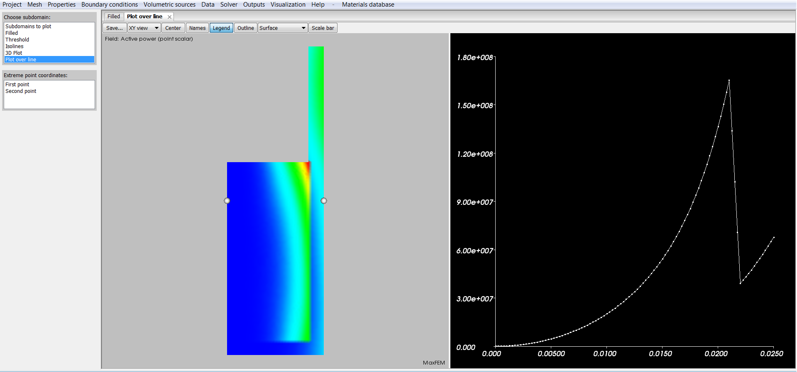
Figure 4: Active power density distribution in the workpiece, plot over line.
Select the option Subdomains to plot → 1 and then Filled
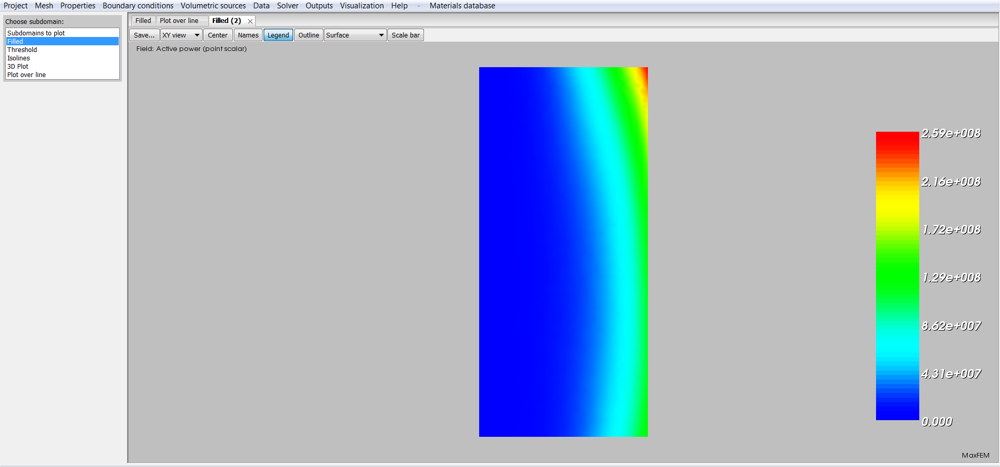
Figure 5: Active power density distribution in the metal.
Select the option Subdomains to plot → 2 and then Filled
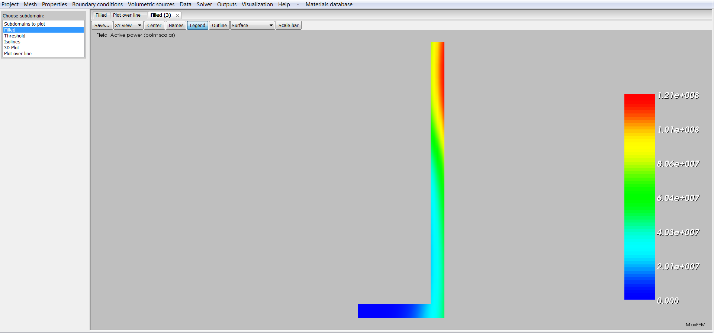
Figure 6: Active power density distribution in the crucible.
Choose the option Visualization → Magnetic field, Subdomains to plot → 1, 2 and Vector modulus to plot the vector field of the modulus of the magnetic field H in the workpiece. Select the option Vectors of the dialog box and then state the values for the scale and density of the arrows on the boxes below. For this picture, the scale is 3.e-8 and the density is 100.
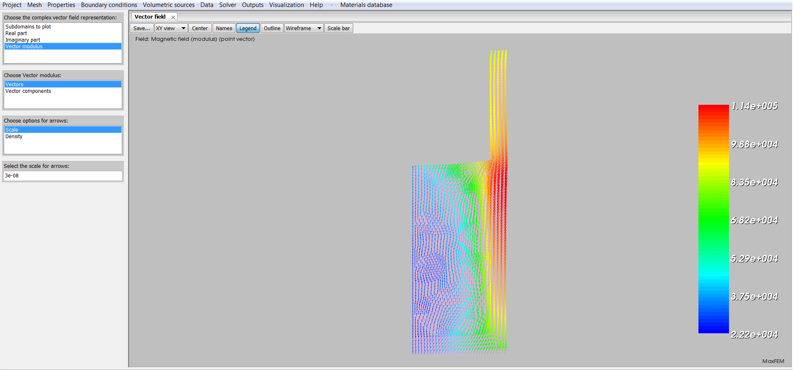
Figure 7: Vector field H in the workpiece.
Select the option Visualization → Lorentz force density, Subdomains to plot → 1, 2 and Vectors to represent the Lorentz force in the workpiece. State the values for the scale and density of the arrows on the boxes below. For this picture, the scale is 3.e-9 and the density is 100.
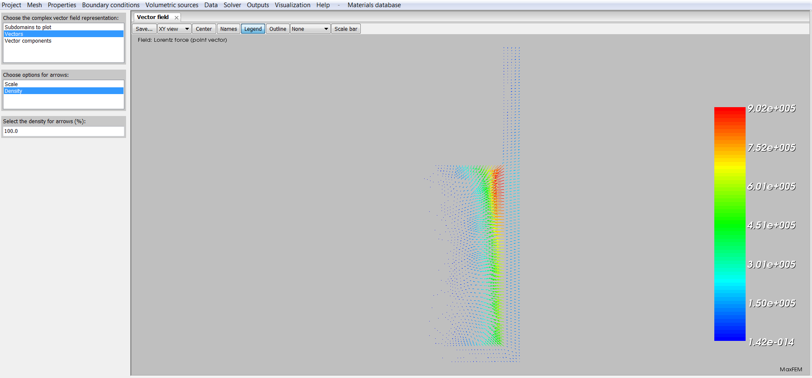
Figure 8: Lorentz force in the workpiece.
Choose Outputs → Current Intensity → Choose domain references → 1 to display the values associated to the RMS current intensity in this domain.
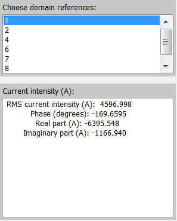
Figure 9: Current intensity in the metal.
Select Outputs → Solid conductor → Choose solid connected component → Source 1 to show the voltage drop and current intensity of the first solid conductor.
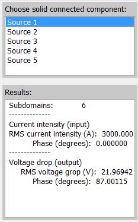
Figure 10: Data and computed result in the first turn of the coil (from bottom to top).
Choose Outputs → Active power → Choose domain references → 1 to display the value of the active power in this domain.
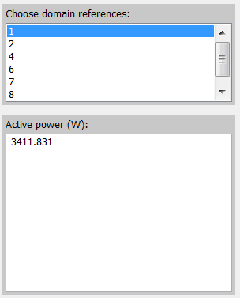
Figure 11: Active power in the metal.